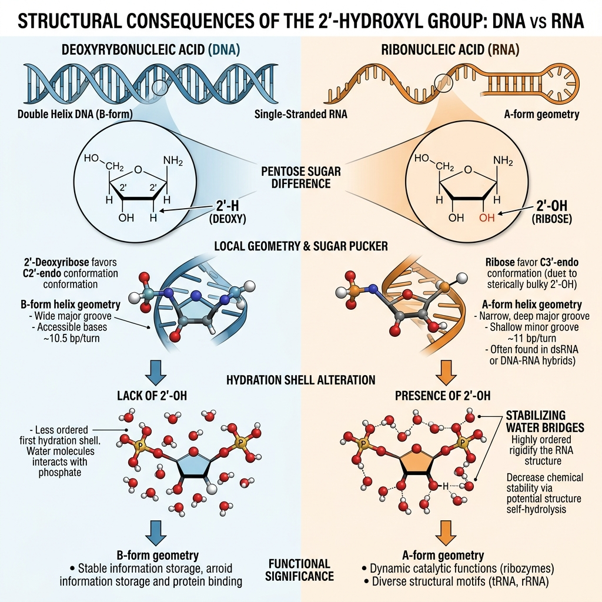

TOPIC 8
RNA
The Physical Basis of Bioinformatics Models
Why This Matters
Think back to what we've established about DNA replication and molecular fidelity. The molecules we track—DNA, RNA, and proteins—have complex physical properties, kinetic histories, and thermodynamic constraints.
When you look at a FASTQ file or a sequencing read, it is incredibly tempting to think, "These are just strings of A, T, G, and C." But biologically, they are not just strings. They represent dynamic physical objects.
That distinction becomes dangerously important in computational biology. A computational error does not necessarily cause a program to crash. A script can be syntactically correct, execute flawlessly, and produce a nice volcano plot while harboring a profound biological error.
The Central Hierarchy in Practice
Keep this vertical sequence of translation in mind throughout bioinformatics. Every computational result you see at the bottom is inextricably linked to the physical reality at the top. Here is where Topic 8 (Bioinformatics Representation) fits in this pipeline:
Biological Molecule
A physical RNA transcript exists inside a living cell, governed by thermodynamics and kinetics.
Bioinformatics Representation (We Are Here)
We translate that physical reality into data structures, math, and strings (like A, U, G, C). A poor translation here destroys all downstream results.
Computational Algorithm
An algorithm evaluates the data representation to solve a computational problem.
Biological Interpretation
The numerical output is interpreted to mean something biological.
What is the Difference Between DNA and RNA?
At the sequence level, you might see ATGCGTAC vs AUGCGUAC. It is tempting to think T ↔ U and therefore DNA and RNA are essentially the same thing. That is only true at a very limited information-representation level.

The most important structural difference is the sugar backbone. DNA contains deoxyribose (2'-H). RNA contains ribose (2'-OH).
That single hydroxyl group has enormous physical consequences. It alters hydrogen bonding, hydration shells, local geometry, and chemical reactivity. It is the reason RNA tends to have different conformational possibilities from DNA.
DNA
RNA
Why Does RNA Fold (and DNA Doesn't)?
The Search for Stability
DNA is almost always bound to a complementary partner strand. Its bases are fully paired and safely locked inside the stable double helix. It has no chemical "need" to fold back on itself.
RNA, however, is synthesized as a single strand. In the watery environment of the cell, exposed chemical bases are thermodynamically unstable. To achieve a lower, more stable energy state, the RNA strand desperately searches for a partner. Lacking a separate complementary strand, it searches its own sequence for complementary regions and folds back on itself to pair up.
Unfolded Sequence:
5' - G G G U C A C C C - 3'
Folds into a Hairpin Loop:
The G G G bonds with the C C C, causing the intermediate U C A to bulge out into an unpaired loop.
The Power of the 2'-OH Group
This is where the chemical difference we just looked at becomes critical. That single 2'-OH group on the RNA sugar backbone acts as an extra "hook" for hydrogen bonding.
While DNA is locked into a rigid, predictable helix, the extra hydrogen bonds in RNA allow it to twist into incredibly complex 3D shapes (like tRNA or the ribosome itself). RNA doesn't just store information; its structure allows it to act like a molecular machine.
Because the sequence entirely dictates how the molecule will fold, the core computational challenge in RNA bioinformatics becomes:
sequence → intramolecular interactions → 3D structure
How Does RNA Hold Its Shape?
So, if RNA folds on itself to find thermodynamic stability, how exactly does it hold those folded shapes together? Computational models must calculate the energy of two primary physical forces:
1. Base Pairing (Horizontal Bonds)
When an RNA strand folds back, the bases connect horizontally across the gap using hydrogen bonds. This is the classic Watson-Crick base pairing (A-U and G-C).
When people first learn biology, they often stop here, thinking: "G-C has three hydrogen bonds, so just count the G-C pairs to find the most stable structure."
However, an algorithm that just counts pairs will completely fail to predict the true structure. Why? Because counting pairs ignores the severe energy penalties of forcing the backbone into tight, unnatural loops, and it entirely ignores the massive energy contribution of the second force: Base Stacking.
2. Base Stacking (Vertical Bonds)
The chemical bases of RNA are flat, aromatic rings. Because they are hydrophobic (water-fearing), they pack tightly on top of each other like a stack of coins to hide from the surrounding water.
This vertical Pi-Pi stacking provides massive thermodynamic stability—often contributing even more stabilizing energy than horizontal base pairing!
stability ~ (base pairing + stacking + loop penalties + solvent)
This is why serious structure prediction algorithms don't just evaluate individual pairs; they evaluate the energy of stacked pairs (e.g., a G-C pair stacked vertically on top of an A-U pair).
The Computational Challenge of Physical Reality
Because vertical stacking energy is so powerful, we cannot calculate the strength of a single base pair in isolation. Its strength depends entirely on the bases immediately stacked above and below it. In bioinformatics, this physical reality is captured using Nearest-Neighbor Models.
Imagine trying to predict the stability of a brick wall. You can't just look at one brick; you have to look at how it rests on the bricks beneath it and supports the bricks above it. The Nearest-Neighbor model does exactly this for RNA bases.
But introducing this physical realism creates a massive computational problem. If an algorithm has to consider every base pair in the context of its neighbors, the number of ways a simple RNA molecule could potentially fold becomes astronomical. If a computer tried to calculate the total energy of every possible shape one by one, the universe would end before it finished.
How computer scientists solve this massive combinatorial puzzle—using clever algorithms to find the most stable structure without checking every single one—is a topic we will explore in later modules. For now, the key takeaway is this:
Bioinformatics Models must prioritize physical reality (like Base Stacking) over computational simplicity.